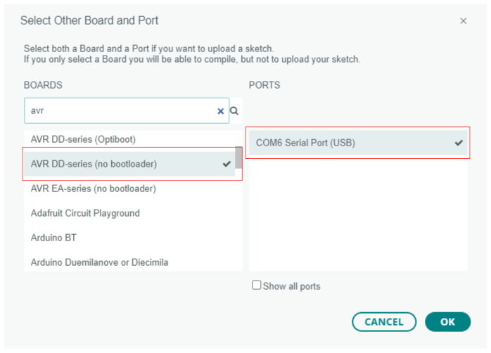
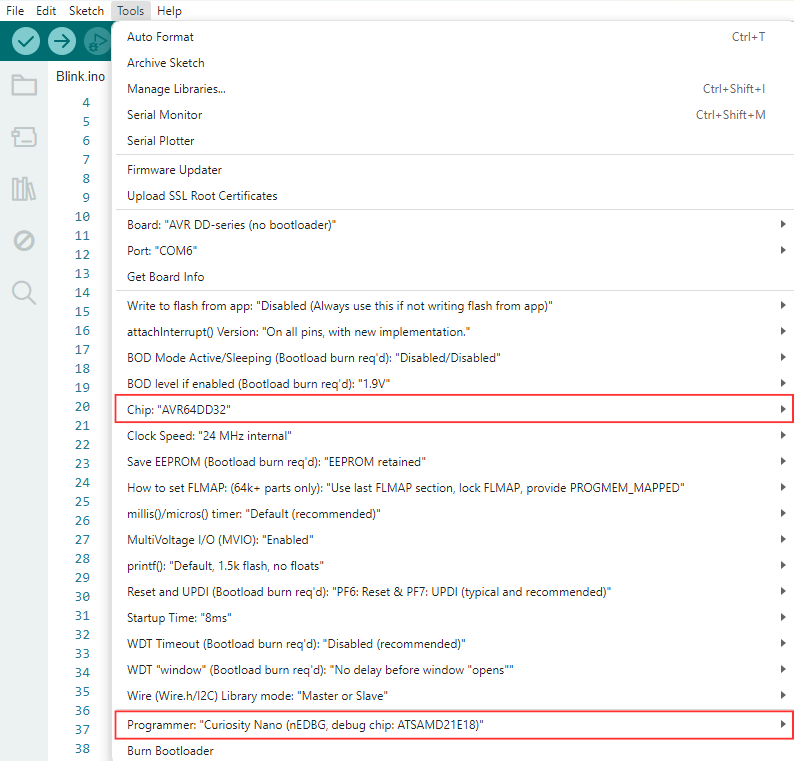

Lab1: Blink an LED!
Required Materials
This lab requires the following materials:
- A desktop or laptop computer
- Arduino IDE (Go to https://www.arduino.cc/en/software if not installed already)
- DXCore support library
- AVR64DD32 Curiosity Nano Evaluation Kit
- Standard USB to Micro USB cable (or a Micro-AB cable) with data transfer support
Learning Objectives
This lab is intended to give you an understanding of how to deploy a basic program to your Curiosity Nano board. Along the way, you will learn:
- How to identify pins on the Curiosity Nano board (and their associated number in code)
- A few basic methods common to almost all programs run on the board
- How to blink an on-board LED.
The "Sketch" File
A “sketch” file is a program that is uploaded onto an Arduino board by Arduino IDE. Sketch files contain functions, which are grouped lines of code that can be called from anywhere in the program. A function contains a header, which details the function name and what values it requires, and a body, that details what code should be run when the function is called.

There are 5 functions that are available to all Arduino sketches:
- setup – runs once during program execution.
- loop – runs infinitely during program execution.
- pinMode – labels a specific pin as a source to read from (input) or as a source to write to (output).
- digitalWrite – sets a pin’s voltage to either LOW (0V) or HIGH (5V or 3.3V).
- delay – tells the sketch to wait a specified number of milliseconds before running the next line.
The setup and loop functions need to be defined with a function body, while the pinMode, digitalWrite, and delay functions can be called without defining a function body. This is because setup and loop are special functions that are called by the Arduino program and contain the main functionality of the sketch.
Pin Basics
The Curiosity Nano board we are using for this lab has 28 pins that can be controlled by the Arduino. Each pin serves different functions. In Lab 1, we will focus on GPIO pins. GPIO stands for General-Purpose Input/Output. These pins can either send or read binary values (1's and 0's), which allows them to control devices like LEDs, read button states, or communicate with external devices.
Of the 28 pins, 25 can function as GPIO pins, with pin PF5 tied to an onboard LED, making it usable only as an output pin. The GPIO pins are shown in gray in the pinout image below.

When using GPIO pins in Arduino, we need to define each pin before using it. Since Arduino can program various boards, each pin is assigned a number. For our board, the pins are numbered 0 to 27. The corresponding pin numbers are listed below:
#define PIN_PA0 (0)
#define PIN_PA1 (1)
#define PIN_PA2 (2)
#define PIN_PA3 (3)
#define PIN_PA4 (4)
#define PIN_PA5 (5)
#define PIN_PA6 (6)
#define PIN_PA7 (7)
#define PIN_PC0 (8)
#define PIN_PC1 (9)
#define PIN_PC2 (10)
#define PIN_PC3 (11)
#define PIN_PD0 (12) // NOT_A_PIN
#define PIN_PD1 (13)
#define PIN_PD2 (14)
#define PIN_PD3 (15)
#define PIN_PD4 (16)
#define PIN_PD5 (17)
#define PIN_PD6 (18)
#define PIN_PD7 (19)
#define PIN_PF0 (20)
#define PIN_PF1 (21)
#define PIN_PF2 (22)
#define PIN_PF3 (23)
#define PIN_PF4 (24)
#define PIN_PF5 (25)
#define PIN_PF6 (26) // RESET
#define PIN_PF7 (27) // UPDI
This file can be located by navigating to the user home directory then going to the following directory:
AppData ⇾ Local ⇾ Arduino15 ⇾ packages ⇾ DxCore ⇾ hardware ⇾ megaavr ⇾ 1.5.11 ⇾ variants ⇾ 32pin-ddseries ⇾ pins_arduino.h.
Avoid modifying it. Changes may affect execution.
Pin Definition
To define a pin in Arduino, you will use the following syntax:
#define nameUsedForPin number In the setup method, you initialize the pin with:
pinMode(nameUsedForPin, OUTPUT); For example, this is how to define pin PF5 (pin 25) in a sketch. This configures pin 25 (PF5) as an output pin.
#define LEDPin 25
void setup() {
pinMode(LEDPin, OUTPUT);
}This sets the output to 1 (HIGH):
digitalWrite(pinName, HIGH);To set the output to 0 (LOW):
digitalWrite(pinName, LOW);Lab Setup
Go to File ⇾ Examples ⇾ 01.Basics ⇾ Blink. Use the example code to make pin PF5 blink an LED.*
#define LED_Pin 25
// The setup function runs once when you press reset or power the board
void setup() {
pinMode(LED_Pin, OUTPUT); // Initialize pin PF5 as an output
}
// The loop function runs over and over again
void loop() {
digitalWrite(LED_Pin, HIGH); // Turn the LED off
delay(1000); // Wait for a second
digitalWrite(LED_Pin, LOW); // Turn the LED on
delay(1000); // Wait for a second
} * The Arduino IDE opens example sketches in read-only mode. To modify the pin definitions, copy and paste the sketch content into a new file before making any edits.
Loading Code onto Board
- Ensure your board is connected to a USB port on your computer.
- Open Arduino IDE and in the top left corner of the Arduino IDE, click the dropdown menu next to the three icons.
- Select "Other Boards and Ports."
- Search for and select AVR DD-series (no bootloader) from the list.
- Choose the appropriate port for your device, typically labeled as COM# Serial Port (USB), where the number sign represents the specific number assigned by your computer. If multiple ports are listed, you can identify the Curiosity port by opening “Device Manager” and navigating to the Ports section. Refer to the images below for guidance. 
- Once you’ve selected the correct board and port, click OK.
- Navigate to the Tools tab and verify that the Chip is set to AVR64DD32 and the Programmer is set to Curiosity Nano (nEDBG, debug chip: ATSAMD21E18). If these settings are incorrect, click on each section to select the appropriate chip and programmer. See the image below for reference. 
- Next, check that it compiles by clicking the Verify button with the checkmark in the top left corner of the screen.
- Finally, click on Sketch in the toolbar and select Upload Using Programmer. This action will download the code to the microcontroller. It will now start blinking the LED!
- You can modify the value in the delay() function to change how often it blinks. Play around with this value and see what happens!
üìåThis sketch can be found under Lab1/Code/Nanoblink.